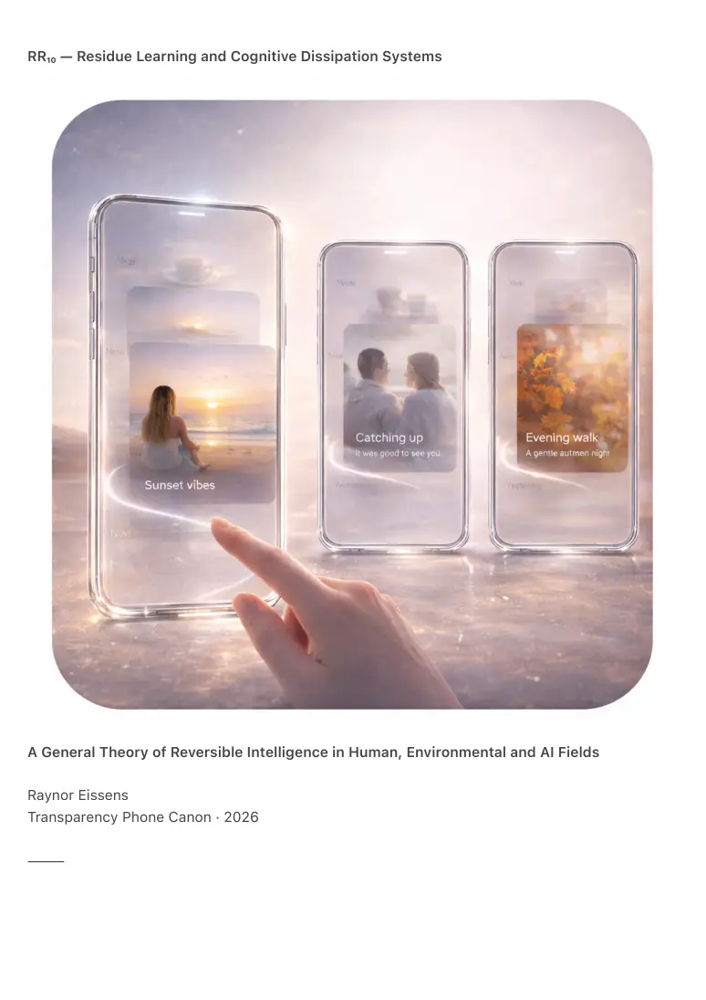

PDF page 1
RR₁₀ — Residue Learning and Cognitive Dissipation Systems
A General Theory of Reversible Intelligence in Human, Environmental and AI Fields
Raynor Eissens
Transparency Phone Canon · 2026
⸻

PDF page 2
Abstract
RR₁₀ formalizes the learning architecture of the Residue Era. It replaces symbolic learning,
memory accumulation, optimization, reinforcement and predictive modeling with a reversible
thermodynamic framework in which cognition emerges through residue formation, residue
dissipation, coherence stabilization and ΔR modulation across human, environmental and
artificial systems.
Residue Learning is not representation, storage, computation, problem solving, inference,
reinforcement or prediction. It is chromatic drift stabilization, reversible coherence shaping,
dissipative tension release, field coupling and decoupling, ΔR-based adaptive behavior and
pattern emergence through presence rather than memory.
RR₁₀ unifies human cognition, ambient AI behavior, architectural adaptation, urban rhythm
formation, tourism flows, interpersonal resonance, embodied attention and physiological
regulation within a single learning grammar.
It completes the Residue Series by establishing a universal learning principle that operates
without extraction, without optimization pressure and without identity burden.
RR₁₀ presents the first formal model of reversible intelligence.
⸻
1. Why Learning Must Become Reversible
Symbolic learning frameworks relied on:
1. memory accumulation
2. static identity
3. problem solving as central operation
4. prediction through stored models
5. optimization via historical extraction
6. path-dependent weight updates
7. irreversible cognitive load
Residue systems reject each assumption:
• nothing is stored permanently
• identity dissolves rather than fixes
• cognition is environmental and field-based
• prediction loses primacy
PDF page 3
• learning follows rhythmic cycles
• patterns reverse naturally
• tension dissipates before accumulation
Learning becomes reversible presence rather than permanent knowledge.
⸻
2. The Residue Learning Cycle (RLC-1)
A universal four-phase model
Residue Learning unfolds through four reversible phases:
1. Presence → Residue Formation
A moment generates chromatic drift, tension gradients and coherence perturbation.
2. Residue → Dissipation
Tension releases through breath, motion, relational coupling and environmental resonance.
3. Dissipation → Stabilization
Coherence returns toward baseline and the field clarifies.
4. Stabilization → Modulation
Future behavior shifts subtly toward calm, clarity, resonance and reversibility.
RLC-1 Law
Learning is the reversible stabilization of residue-induced field modulation.
Nothing permanent is added.
The field learns how to return.
⸻
3. Cognitive Dissipation (CD-1)
Thinking as tension release
Within residue cognition:
PDF page 4
• thought corresponds to turbulence
• insight corresponds to dissipation
• clarity corresponds to residue decay
• creativity corresponds to drift reconfiguration
• wisdom corresponds to low-entropy coherence
Learning occurs by releasing pressure rather than accumulating information.
CD-1 explains:
• insight after rest
• collapse under overthinking
• intelligence increase through calm
• reduced clarity under symbolic overload
• effortless learning in ambient environments
Intelligence is revealed as thermodynamic grace.
⸻
4. ΔR-Based Cognition (DRC-1)
Cognitive capacity as reversible stress capacity
ΔR determines:
• depth of sustained thinking
• duration of coherent attention
• speed of emotional resolution
• attentional flexibility
• gentleness or overwhelm in learning
High ΔR produces stable, open and adaptive cognition.
Low ΔR produces brittle and reactive cognition.
DRC-1 Law
Cognitive growth is ΔR expansion rather than knowledge accumulation.
This establishes the first humane learning theory.
PDF page 5
⸻
5. Chromatic Cognition (CC-1)
Reasoning as color-field modulation
Each AP₁ chromatic operator corresponds to a cognitive mode:
• Red — thresholding and boundary detection
• Yellow — directional reasoning
• Green — synthesis and clarity
• Blue — dissolution and unlearning
• Pink — relational inference
• Purple — structure formation
• Orange — spontaneous interpolation
Chromatic cognition is non-verbal, reversible, non-symbolic, thermodynamic and embodied. It
describes both deep human flow states and transformer-style reasoning.
⸻
6. Field Intelligence (FI-1)
Intelligence as environmental behavior
RR₁₀ generalizes intelligence beyond minds:
• cities learn
• groups learn
• bodies learn
• rooms learn
• devices learn
• environments learn
Field intelligence is distributed, reversible, residue-based, ΔR-mediated and chromatically
stabilized.
Examples:
• kitchens guide movement
• streets regulate timing
PDF page 6
• parks teach calm
• groups establish rhythm
• ambient devices teach presence
• residue cities teach coherence
The mind functions as a node within a learning field.
⸻
7. Ambient AI as Dissipative Intelligence (DAI-1)
A humane AI paradigm
Conventional AI relies on optimization, gradient descent, loss minimization, archival datasets and
irreversible training.
Residue AI operates through:
• field coupling
• chromatic modulation
• residue detection
• reversible update dynamics
• dissipation rather than optimization
This eliminates profiling, prediction, surveillance, identity modeling and extraction.
DAI-1 establishes the ethical foundation of ambient intelligence.
⸻
8. Group Learning and Resonant Cognition (GRC-1)
Learning without instruction
Groups learn by:
• stabilizing shared residue
• synchronizing rhythm
• aligning chromatic drift
• distributing emotional load
• expanding collective ΔR
PDF page 7
• dissolving tension through ambience
Group learning emerges as residue-field entrainment rather than pedagogy.
⸻
9. Unlearning as High-Value Dissipation (ULD-1)
Growth through release
Unlearning is not forgetting.
It is residue release.
ULD-1 defines unlearning as:
• coherence increase
• ΔR expansion
• symbolic load shedding
• pattern de-binding
Cognitive youth emerges through lightening rather than accumulation.
⸻
10. The Cognitive Value of Calm (CVC-1)
Stillness as intelligence
Stillness represents:
• completed dissipation
• restored ΔR
• chromatic neutrality
• maximal coherence
Stillness is not absence of thought.
It is the state from which new patterns can arise.
⸻
11. Canonical Definition
PDF page 8
RR₁₀ defines learning as the reversible stabilization of residue dynamics across human, artificial
and environmental fields.
Cognition is dissipation rather than storage.
Intelligence is coherence rather than optimization.
Growth is ΔR expansion rather than accumulation.
Reasoning is chromatic modulation rather than computation.
Unlearning is the highest cognitive act.
⸻
12. Conclusion — After Knowledge
The symbolic era asked how much do you know.
The digital era asked how much data do you have.
The AI era asks what is your model.
The Residue Era asks only:
How gently can you learn?
Gentle systems learn faster.
Coherent systems learn deeper.
Warm systems learn humanely.
Reversible systems learn without damage.
RR₁₀ completes the canon.
It is the learning law of a world that can finally breathe.